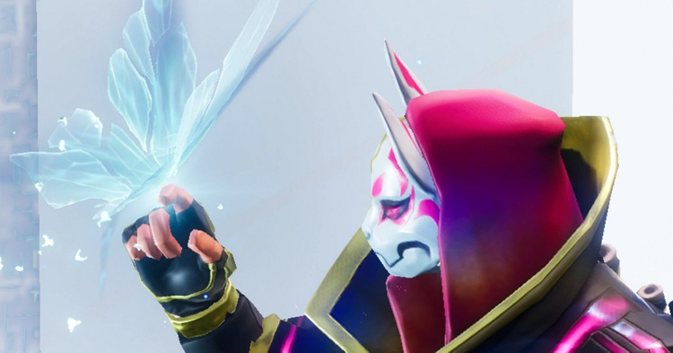
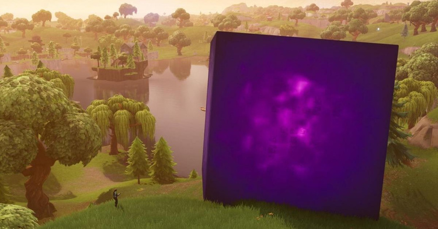

Tudo começou com um meteoro que trazia de outra dimensão O Visitante, o primeiro membro dos Sete a aparecer no jogo no Capítulo 1: Temporada 4. Preso no loop, não demorou para ele tentar escapar. Em junho de 2018, ele fugiu em um foguete, rompendo a barreira da realidade e espalhando Fendas pelo céu da ilha. Depois disso, vários objetos passaram a desaparecer do loop e cair no mundo real. O mais famoso foi uma estátua de hambúrguer que apareceu em um deserto na Califórnia. Seria o mundo real a existência fora do loop, afinal? Isso ainda não sabemos, mas houve outra consequência das ações do Visitante.
Quando a fenda se fechou, em agosto de 2018, ela deixou para trás um enorme cubo arroxeado de matéria escura, carinhosamente apelidado pelos jogadores de Kevin. Ele percorreu o mapa de maneira enigmática, aparentemente sem rumo, mas algo o atraiu para o Lago do Saque. A energia contida naquele lugar acabou desestabilizando O Cubo, que explodiu em setembro de 2018, levando todos os jogadores nas proximidades para outra dimensão. Essa foi a primeira vez que entramos no Nexus, uma dimensão entre as realidades que se mostraria bem importante mais para frente. Lá surgiu uma nova Fenda, mas dessa vez tomou a forma de uma borboleta, guiando todos de volta para a ilha. 
A história de Fortnite é transmitida de maneira bastante experimental. Em poucos momentos recebemos sequências diretas de narrativa, como nos trailers das temporadas. A maior parte do enredo é contado pelos eventos, descrições de skins e outros detalhes do jogo que costumam passar despercebidos no meio do frenesi das batalhas. Caso tenha jogado qualquer partida de Fortnite, você deve estar minimamente familiarizado em como as batalhas funcionam. Você escolhe uma skin para o seu personagem, salta de um ônibus especial, enfrenta dezenas de inimigos até a morte e, quando termina, repete tudo de novo. Pensando bem, é quase como se você estivesse preso em um ciclo temporal, não é mesmo? Esse é o primeiro segredo sobre a história. Na verdade, seu personagem é uma vítima de uma anomalia temporal — uma pessoa presa em um loop, forçada a repetir essa batalha por toda a eternidade. Como a memória de todos os personagens é apagada entre cada partida, ninguém nessa realidade desconfia que está preso, mas a cada temporada há uma disrupção nessa repetição: os eventos ao vivo. A Crise Zero Um bom ponto de partida para entender a conexão entre os eventos é analisar a história a partir do trailer para o Capítulo 2: Temporada 5. Chamada de Ponto Zero, essa temporada explica a energia de mesmo nome que mantém toda realidade estável. Quem o controla têm acesso a um poder inimaginável, sendo este o grande objetivo de diferentes facções na história. Confira: